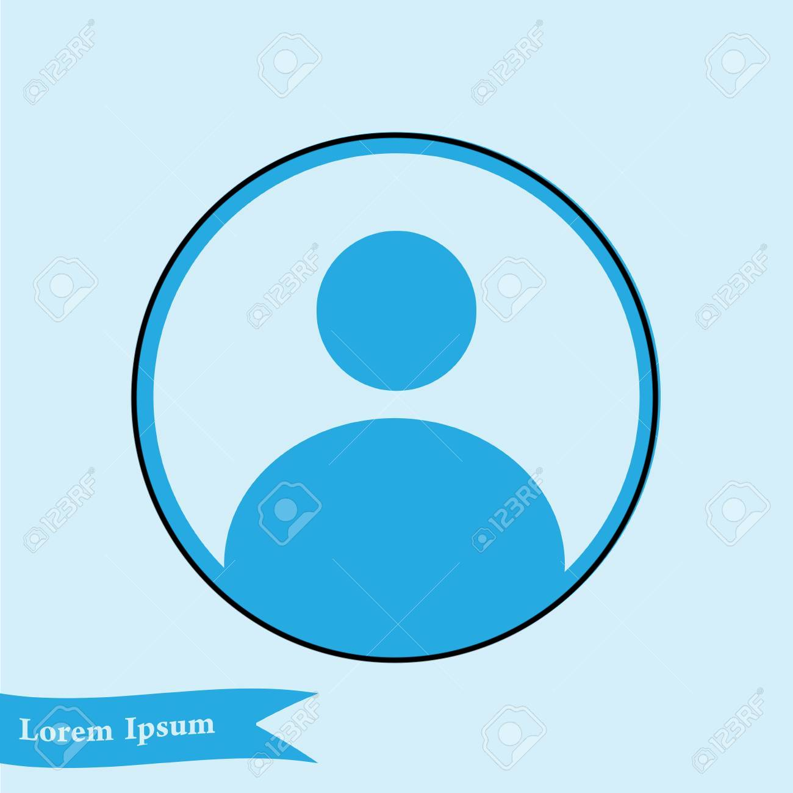

{% extends "layout.html" %}

{% block title %}Home{% endblock %}

{% block home %}
  <!-- slick(jQueryプラグイン)の読み込み -->
  <link rel="stylesheet" type="text/css" href="https://cdnjs.cloudflare.com/ajax/libs/slick-carousel/1.8.1/slick.css"/>
  <link rel="stylesheet" type="text/css" href="https://cdnjs.cloudflare.com/ajax/libs/slick-carousel/1.8.1/slick-theme.css"/>
  <!-- jQueryの読み込み -->
  <script src="https://ajax.googleapis.com/ajax/libs/jquery/3.6.0/jquery.min.js"></script>
  <!-- bootstrapの読み込み -->
  <link href="https://cdn.jsdelivr.net/npm/bootstrap@5.0.0-beta1/dist/css/bootstrap.min.css" rel="stylesheet" integrity="sha384-giJF6kkoqNQ00vy+HMDP7azOuL0xtbfIcaT9wjKHr8RbDVddVHyTfAAsrekwKmP1" crossorigin="anonymous">
  <script src="https://cdn.jsdelivr.net/npm/bootstrap@5.0.0-beta1/dist/js/bootstrap.bundle.min.js" integrity="sha384-ygbV9kiqUc6oa4msXn9868pTtWMgiQaeYH7/t7LECLbyPA2x65Kgf80OJFdroafW" crossorigin="anonymous"></script>
  <style>
    ul {
      display: flex;
      list-style: none;
    }

    .slick-prev::before,
    .slick-next::before {
      color: black!important;
    }

    h2 {
      text-shadow: #fff 2px 0, #fff -2px 0, #fff 0 -2px, #fff 0 2px, #fff 2px 2px, #fff -2px 2px, #fff 2px -2px, #fff -2px -2px, #fff 1px 2px, #fff -1px 2px, #fff 1px -2px, #fff -1px -2px, #fff 2px 1px, #fff -2px 1px, #fff 2px -1px, #fff -2px -1px;
    }

    .shares_title {
      background-color: lightblue;
      display: flex;
      justify-content: center;
      align-items: center;
    }

    /*ここから追加したやつ*/
    .talk {
    margin-bottom: 40px;
    }

    .talk figure img {
    width: 100%;
    height: 100%;
    border: 2px solid #9ce191;
    border-radius: 50%;
    margin: 0;
    }

    /* 画像の下のテキスト */
    .talk-imgname {
    padding: 5px 0 0;
    font-size: 10px;
    text-align: center;
    }

    p.talk-text {
    margin: 0 0 8px;
    }

    p.talk-text:last-child {
    margin-bottom: 0px;
    }

    /* 回り込み解除 */
    .talk:after,.talk:before {
    clear: both;
    content: "";
    display: block;
    }

    /* ----- 左の場合 ----- */

    /* 左画像 */
    .talk-Limg {
    margin-left: 4px;
    margin-top: -1px;
    float: left;
    width: 60px;
    height: 60px;
    }

    /* 左からの吹き出しテキスト */
    .talk-Ltxt {
    color: #444;
    position: relative;
    margin-left: 100px;
    padding: 1.2em;
    border: 3px solid #9ce191;
    background-color: #fff;
    border-radius: 5px;
    }

    /* 左の三角形を作る */
    .talk-Ltxt:before {
    position: absolute;
    content: '';
    border: 10px solid transparent;
    border-right: 10px solid #9ce191;
    top: 15px;
    left: -20px;
    }

    .talk-Ltxt:after {
    position: absolute;
    content: '';
    border: 10px solid transparent;
    border-right: 10px solid #fff;
    top: 15px;
    left: -16px;
    }
  </style>
{% endblock %}

{% block main %}
  <div class="slider">
    <div></div>
    <div></div>
    <div></div>
  </div>

  <div class="shares">
    <div class="shares_title">
      <h2>お客様の声</h2>
      <a href={{ redirect_url }}>Twitterでこのページを共有</a>
    </div>
    {% for tweet in tweets %}
      <div class="talk">
        <figure class="talk-Limg">
          
          <figcaption class="talk-imgname">@{{ tweet.user.screen_name }}</figcaption>
        </figure>
        <div class="talk-Ltxt">
          <p class="talk-text">{{ tweet.text }}</p>
        </div>
      </div>
    {% endfor %} 
  </div>

  <!-- slickのjsの読み込み -->
  <script src="https://cdnjs.cloudflare.com/ajax/libs/slick-carousel/1.8.1/slick.min.js"></script>
  <!-- 起動スクリプト -->
  <script>
    $('.slider').slick({
      arrows:true,
      dots:true,
    });
  </script>

{% endblock %}
